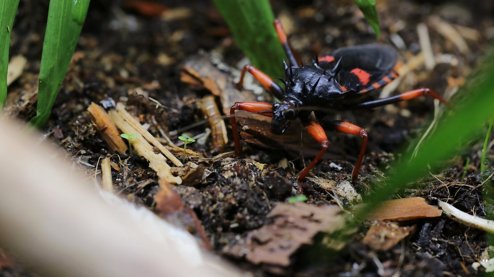
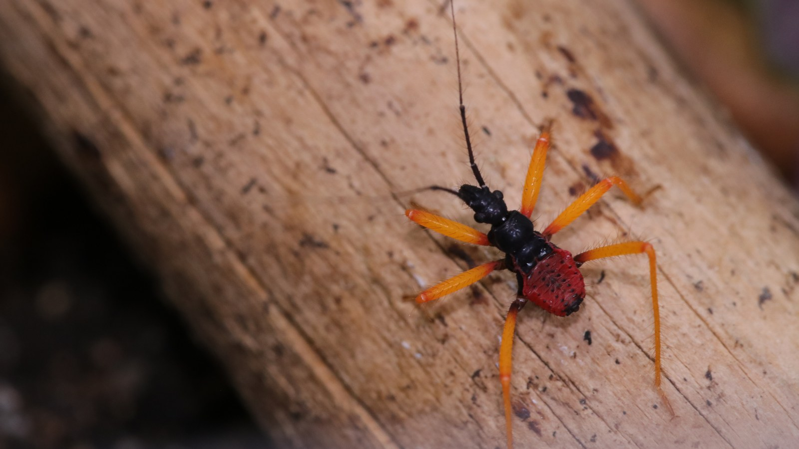
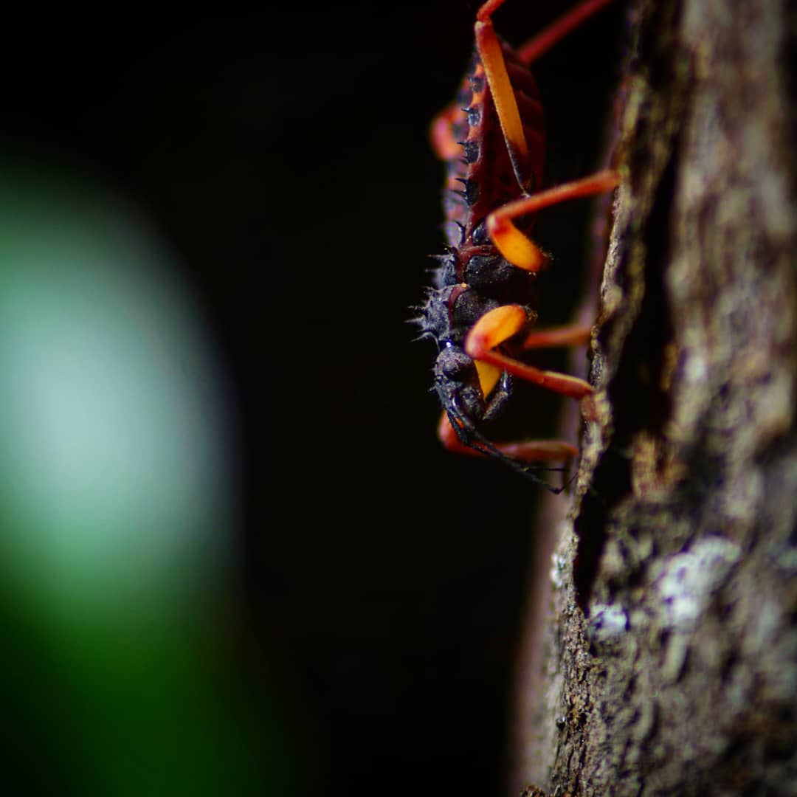
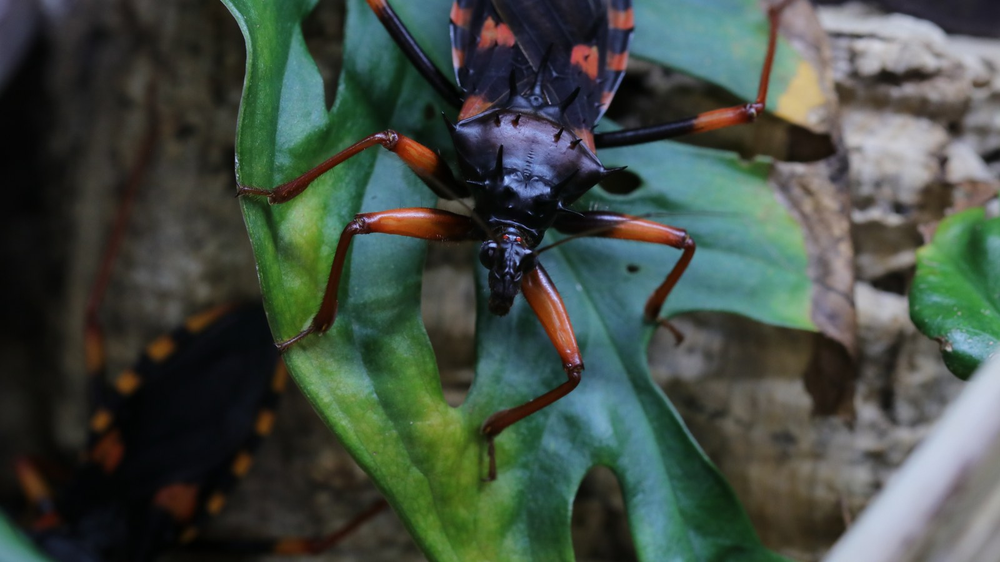
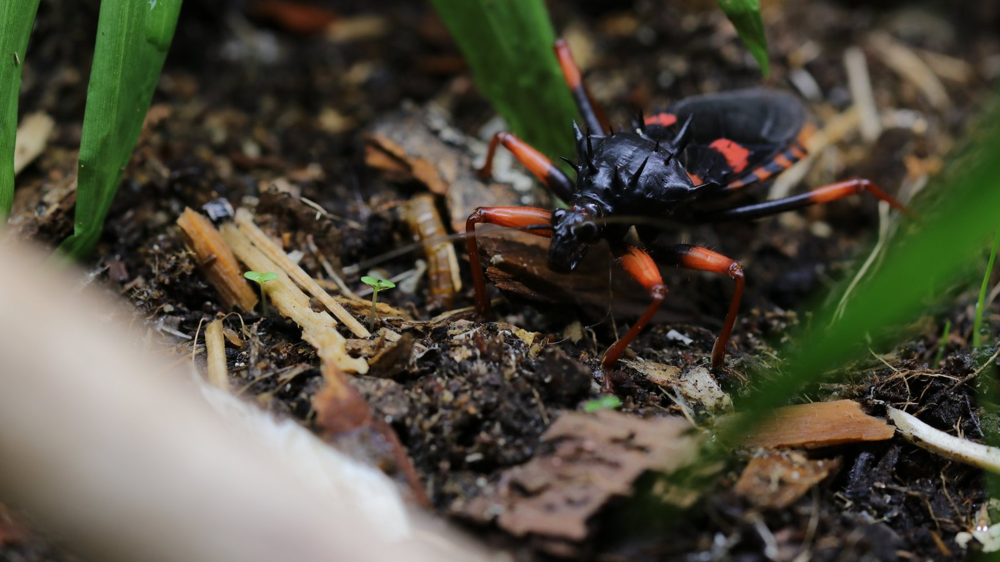

A predatory assassin bug from tropical Africa. Like other reduviids, it uses a piercing-sucking rostrum to subdue prey and take in liquefied tissues. [1]
Species profile · Current colony
Psyttala horrida
Assassin bug
Psyttala horrida brings a different shape and scale to the current collection. The profile opens with an adult moving across the enclosure floor, while the gallery compares the bright nymph stage with adult foliage and ground use.

Scientific namePsyttala horrida
FamilyReduviidae
Native rangeAfrica
TaxonomyAccepted species
SexMixed colony
In the wild
Natural history.
The rough, sculpted body and long legs make the insects look almost plant-like at rest. Their predatory mouthparts also mean they should not be handled casually. [1]
The colony includes multiple sexes and life stages. Ventilation, climbing structure, secure containment, and carefully sized live prey are tracked at colony level.
Taxonomy and range
Psyttala horrida is an African assassin bug in the family Reduviidae. A modern morphological study describes its eggs and nymphs and notes that all six recognised species of Psyttala are African generalist predators of insects and other arthropods. [1]
What the record can show
The same study addresses a common spelling problem: Psyttala is the original and correct genus spelling, while “Psytalla” is widely repeated in error. This profile uses Psyttala consistently and treats the group as a colony rather than inventing individual records. [1]
Conservation context
Status, trade & uncertainty.
IUCN evaluates extinction risk; CITES regulates international trade. They answer different questions, and missing data should remain visible. [2] [3]
Assessment not verified
A species-level IUCN category has not been verified for this profile. This is an evidence gap here, not evidence of low extinction risk.
Not CITES-listed
The species was not found in the CITES Appendices valid from 5 March 2026, reviewed on 3 November 2026. [3]
What the evidence supports
Modern work describes morphology and development, but the broad label “Africa” and limited population data are not enough for a meaningful global trend assessment. [1]
Make provenance visible
Retain the correct spelling Psyttala, seller history, and colony origin. Keep captive observations separate from assumptions about abundance in the wild.
Sources reviewed 3 November 2026. Historical assessment dates are retained. Assessment uncertainty is not evidence of low risk; national requirements may differ from CITES.
Life in the collection
A living colony.
This assassin bug colony brings predatory insects into the collection. The profile follows the colony as a living group record, with habitat, feeding observations, and photography kept distinct from published species-level research.




From Instagram
Posts & reels.
Personal observations
From the Codex.
Introvertebrates Codex
Current colony · care history
Time in care, feeding records, moults and measurements. These are observations from the Introvertebrates collection, not species-wide averages.
Collection records are not available here yet.
Private notes and identifying details are kept off the website.
Continue exploring
Related profiles.


Read further
Sources.
- 1. Morphological study of Psyttala horrida eggs and nymphsView the source.
- 2. IUCN — Red List Categories and Criteria, version 3.1 (assessment definitions)View the source.
- 3. CITES — Appendices I, II and III (valid from 5 March 2026)View the source.